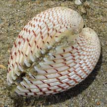
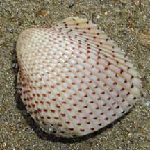
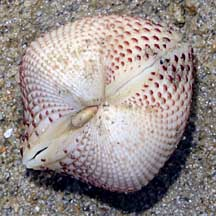
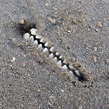
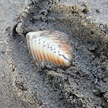
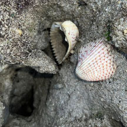
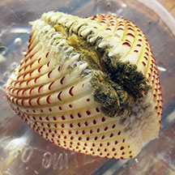
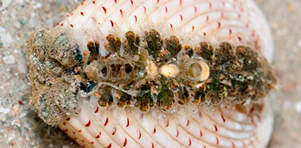
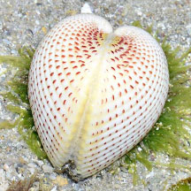
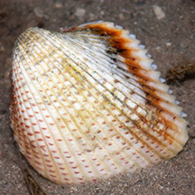

|
|
| molluscs text index | photo index |
| Phylum Mollusca > Class Bivalvia > Family Cardiidae |
| Strawberry
cockle Fragum unedo Family Cardiidae updated May 2020 Where seen? This pretty clam is not often seen, usually on sandy shores near reefs. Possibly they are more common but hidden beneath the sand. Elsewhere, they are shallow burrowers in sandy bottoms, often occuring in dense populations. Features: 4-6cm. The sturdy two-part shell is heavy, squarish with strong ribs marked with little red beads. |
 Terumbu Pempang Darat, Jun 10 |
 |
 |
| What does it eat? Unlike most
other bivalves, the strawberry cockle harbours symbiotic zooxanthellae (a
kind of single-celled algae) in its body mantle. The zooxanthellae
produce food through photosynthesis which it shares with the clam.
To maximise the productivity of its "farm", when submerged, the clam exposes its body mantle to sunlight by sticking it out of the shell and above the surface. In this habit, it is similar to Giant clams. It also filter feeds - when submerged, it opens the valves and sucks in water to filter out edible bits. Human uses: Elsewhere, it is used in decorative shellcraft and may be eaten by coastal dwellers. |
 Buried with only 'teeth' showing. Pulau Semakau, Jan 20 |
 When shell is exposed after sand is removed. Pulau Semakau, Jan 20 |
 Eaten by occupant of burrow? Beting Bemban Besar, Oct 25 Photo shared by Kelvin Yong on facebook. |
 Body mantle sticking out of the shell. Pulau Semakau North, 16 Photo shared by Russel Low on facebook. |
 Body mantle sticking out of the shell. Cyrene Reef, Feb 16 Photo shared by Heng Pei Yan on facebook. |
| Strawberry cockles on Singapore shores |
On wildsingapore
flickr
|
| Other sightings on Singapore shores |
 Cyrene Reef, Feb 17 Photo shared by Loh Kok Sheng on facebook. |
 Pulau Semakau South, Jul 15 |
|
Links
References
|